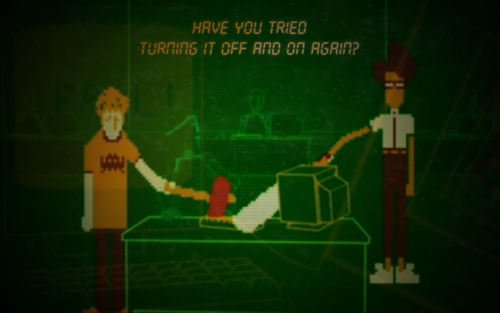

Tema 1.a: Introducción a la administración de sistemas
Programación y Administración de Sistemas
(2023-2024)
1 Objetivos
Objetivos del aprendizaje (I)
- Definir el sistema informático de una organización.
- Definir el Departamento de Informática, sus funciones y su organización.
- Definir el rol del administrador de sistemas dentro de una organización.
- Enumerar las tareas típicas del administrador de sistemas, incluyendo tareas a nivel hardware, mantenimiento software y documentación, soporte a usuarios, servicios, seguridad y copias de seguridad.
- Definir estrategias y consejos genéricos en administración de sistemas.
Objetivos del aprendizaje (II)
- Distinguir entre las distintas generaciones de sistemas operativos y cómo va surgiendo la necesidad de administrar dichos sistemas operativos o servicios.
- Enumerar los sistemas operativos más usuales.
- Explicar qué es GNULinux, cómo surge, su filosofía y las principales distribuciones de las que disponemos, destacando las más adecuadas para administración de sistemas.
- Definir qué es el software libre y dar ejemplos de software que no sea libre.
- Enumerar las ventajas del software libre para la administración de sistemas.
- Identificar el nivel de calado del software libre en administración de sistemas.
- Enumerar desventajas del software libre.
- Enumerar ventajas y desventajas del uso de interfaces gráficas de usuario en administración de sistemas.
- Saber qué es un superusuario y cómo se pueden realizar tareas como superusuario mediante la herramienta
sudo.
2 El sistema informático y la organización
NOTA: Esta sección la veremos por encima en clase y se recomienda su lectura en casa.
El sistema informático
Ópticas posibles del Sistema Informático de una organización
Para la organización: es un departamento como cualquier otro, con unos recursos disponibles para el resto de departamentos.
Para los informáticos: es un conjunto de servidores, redes y ordenadores personales para “hacer cosas”.
Para los usuarios: es una herramienta más que proporciona la organización para mejorar su tarea.
Para la dirección: lo usan como una gran base de datos para hacer consultas que pueden ayudarles en la toma de decisiones.
El Departamento de Informática
- El Departamento de Informática (o Departamento de Tecnologías de la Información, término algo más general), se encarga de mantener y gestionar el Sistema Informático.
Tareas del Departamento de Informática
- Sistema Informático Físico: Hardware:
Servidores: múltiples servidores especializados \(\rightarrow\) + control, - riesgo de fallos.
Ordenadores Personales y dispositivos móviles: prácticamente uno por trabajador.
Cableado y electrónica de red (concentradores, encaminadores, cortafuegos y conmutadores).
[Centro de datos]: sala con condiciones físicas y de seguridad para los servidores.
- Software:
- Sistemas Operativos: se debe hacer distinción entre el SO/servicios de los servidores/nube y el de los PCs.
- Software empresarial de base.
- Aplicaciones específicas.
- Personal: Responsable de Informática y Personal Técnico.
Funciones del Dept. de Informática
Funciones del Dept. de Informática
Algunos ejemplos de tareas:
Administración de servidores
- Instalar, mantener y reparar los servidores que prestan los servicios del sistema informático de la organización.
Administración de usuarios
Atención de las necesidades de los usuarios.
Mantenimiento de sus equipos de sobremesa (microinformática).
Parte más “visible” de sus funciones.
Funciones del Dept. de Informática
Administración de la red
Responsabilidad sobre la parte física de la red.
Asegurar que se encuentra en buen funcionamiento y que llega, de forma óptima, a todos los puntos de la organización.
Administración de los datos
Mantener la integridad de la información de la organización.
La información debería de estar en los servidores (aunque a veces se encuentra distribuida por todo el sistema).
¿Minería de datos?.
Funciones del Dept. de Informática
Administración de la web:
- Mantenimiento del servidor web y, muchas veces, del contenido de la web.
- Homogeneidad global.
Administración de la seguridad
- La seguridad informática es compleja:
- Desde la seguridad de la información existente,
- hasta la protección física contra robos, incendios…
- Tarea presente en todas las funciones.
Funciones del Dept. de Informática
Desarrollo
- Una organización suele necesitar software específico.
- A veces, en lugar de comprarlo, se desarrolla. Ejemplos de aplicaciones en la UCO.
- Esta asignatura no cubre este aspecto, en todo caso, cubriría su implantación.
Responsable de Informática
- Es el enlace entre:
- las necesidades de la empresa,
- y el trabajo que se lleva a cabo en el departamento.
- Decide: qué software comprar (o si se hace a medida y cómo), servidores necesarios, ordenadores y red de comunicaciones…
Funciones del Dept. de Informática
Sistemas y Comunicaciones: servidores, correo, comunicaciones, infraestructura…
Desarrollo y Explotación: aplicaciones propias y externas.
Soporte: administración electrónica, docencia…
Área de Gestión: usuarios, licencias de software, web, sigma…
Interdependencia
Interdependencia
- Cada función \(\rightarrow\) tareas definidas.
- Sin embargo, no son independientes, sino que tienen que trabajar coordinadas.
- Las funciones tienen intersecciones en algunos puntos.
- Algunas tareas tienen que estar mezcladas para conseguir una gestión, un servicio y una atención al usuario en las mejores condiciones posibles.
Funciones del Dept. de Informática
¿Dar de alta a un usuario en los servicios es una tarea para el administrador de usuarios o para el administrador de servidores?
- Si es la misma persona quien hace las dos funciones, no hay problema.
- Si no lo es, se tiene que decidir quién se encarga:
- En caso de que lo haga la persona que administra los servidores, se ha dividido la tarea de dar de alta a los usuarios (y todo lo que comporta) en diversas personas. Hay que valorar si vale la pena.
- Si sólo lo hace la persona que administra a los usuarios, entonces “manipulará” los servidores para hacerlo. Hay que valorar si ello es prudente.
3 La figura del administrador de sistemas
Rol de administración de sistemas
Un Administrador/a de Sistemas es la persona que tiene la responsabilidad de implementar, configurar, mantener, monitorizar, documentar y asegurar el correcto funcionamiento de un sistema informático, o algún aspecto de éste.
El Administrador/a del Sistemas tiene por objeto garantizar el tiempo de actividad (uptime), rendimiento, uso de recursos y la seguridad de los servidores que administra de forma proactiva.
Fuente: http://es.wikipedia.org/wiki/Administrador_de_sistemas
Dentro vídeo: The IT crowd
Rol de administración de sistemas
- Persona con el poder y la responsabilidad de establecer:
- acciones,
- procedimientos,
- y normas, para lograr que el sistema informático sea:
- eficiente,
- seguro,
- fiable,
- y amigable.
- Cualidades:Autoridad + responsabilidad + servicio + cooperación
Rol de administración de sistemas
¿Qué se espera del administrador?
Amplios conocimientos de todo el sistema: hardware, software, datos, usuarios…
Capacidad reconocida para tomar decisiones.
Ambición y espíritu de superación.
Eficacia y moral irreprochables.
Responsabilidad: se trabaja con datos muy importantes, hay un jefe por encima…
4 Tareas detalladas
Tareas detalladas: nivel más hardware
Planificar y administrar el entorno físico:
- Diseñar la habitación, especificar el sistema de refrigeración, las conexiones de energía, el control del entorno (alarma contraincendios, seguridad física…).
Planificar los cortes de suministro para realizar actualizaciones o para administrar los dispositivos.
Localizar, reparar y reemplazar componentes hardware defectuosos.
Configurar y mantener la conectividad entre los hosts (redes):
- Monitorización, Resolución de problemas, Calidad de servicio…
Instalar y mantener dispositivos del sistema, hardware y drivers. Especificar dispositivos soportados.
Tareas detalladas: mantenimiento software y documentación
- Mantenimiento software:
- Instalación y configuración de sistemas operativos.
- Detección de problemas en el software y reparación.
- Configurar y mantener aplicaciones de negocio:
- Aplicaciones propias (p.ej. Sigma en la UCO).
- e-mail.
- Agendas, calendarios…
- Documentación:
- Documentar todo el sistema.
- Mantener documentos sobre configuraciones locales y políticas locales.
Tareas detalladas: soporte a usuarios

Formar a los usuarios en el manejo del software y en seguridad.
Ayudar a los usuarios y proporcionar soporte.
Establecer un sistema de rastreo de problemas para contestar las cuestiones de los usuarios (sistema Hermes de la UCO para notificación de incidencias).
Asegurar que los usuarios tiene acceso a toda la documentación.
Tareas detalladas: servicios
Instalar y mantener las cuentas de usuario, desarrollar políticas de uso aceptables y de nombrado de usuarios, instalar/configurar/administrar servicio de nombres, manejar las licencias de software…
Determinar los requisitos software, los parches a instalar, los servicios a proporcionar y cuáles deshabilitar.
Configurar los servicios de red (con sus políticas y sus requisitos de seguridad):
- Impresión, ficheros compartidos, servicio de nombres…
Instalar, configurar y administrar servidores web.
Tareas detalladas: seguridad
- Determinar cuotas de disco, políticas de manejo del espacio y monitorizar los ficheros de
log.
Configurar y manejar la seguridad del sistema:
Seguridad para aplicaciones de negocio.
Lectura de listas de correo de seguridad y de alertas CERT (https://cert.europa.eu/), SNORT (reglas firewall liberadas, pago por alertas inmediatas).
Instalar y configurar firewall para limitar el acceso de intrusos.
Recabar evidencias en caso de intrusión y limpiar el rastro.
Tareas detalladas: copias de seguridad
Tareas detalladas: copias de seguridad
Configurar y mantener backups del sistema:
Determinar la estrategia y las políticas de copias de seguridad.
Configurar el software de copia.
Realizar/automatizar copias.
Mantener logs.
Determinar planes de supervivencia a catástrofes.
Realizar restauraciones.
Comprobar la integridad de las copias.
5 Estrategias
Estrategia general
Estrategia al realizar una tarea:
Planearlo antes de hacer los cambios, haciendo un estudio detallado de los pasos que hay que realizar.
Hacer los cambios reversibles, haciendo copia de seguridad del sistema o de los ficheros de configuración a modificar.
Realizar los cambios de forma incremental, probándolos si fuese posible (más fácil localizar los fallos).
Probarlo, probarlo, probarlo, …, antes de hacerlo público.
Conocer realmente cómo trabajan las cosas.
Cuando se realice cualquier modificación:
- Precaución antes de… probarlo después de…
Cuaderno de bitácora.
6 ¿Por dónde empiezo?
Tareas de soporte a organización y tareas DevOps

Después del perfil “clásico” de administración de sistemas que hemos visto como soporte a una organización resulta pertinente echar un vistazo al de soporte al desarrollo y despliegue de aplicaciones.
DevOps (acrónimo del inglés): es un conjunto de prácticas que agrupan el desarrollo de software ( Dev ) y las operaciones de TI (Ops ) roadmap.sh/devops
Tecnologías y productos para DevOps
7 Proyecto asignatura
Vale, ¿pero por dónde empezar?
- Instalar GNU/Linux:
- Ideal: Uso cotidiano como sistema operativo de tu PC
- Menos ideal: Máquina virtual
- Aprende a “vivir en la terminal”:
- Aprende algún editor de texto para el terminal:
- Fácil:
nano - Intermedio-productivo:
vi/vimviene instalado en todas las distribuciones de GNU/Linux y *BSD - Difícil-Pro:
emacs: “emacs está bien como sistema operativo pero le falta un buen editor de texto”
- Fácil: